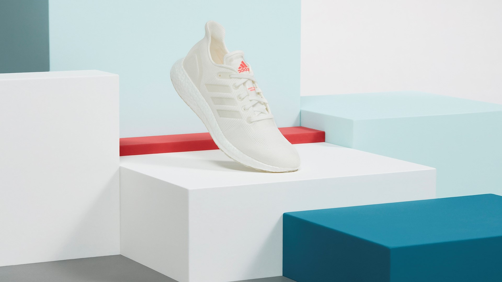
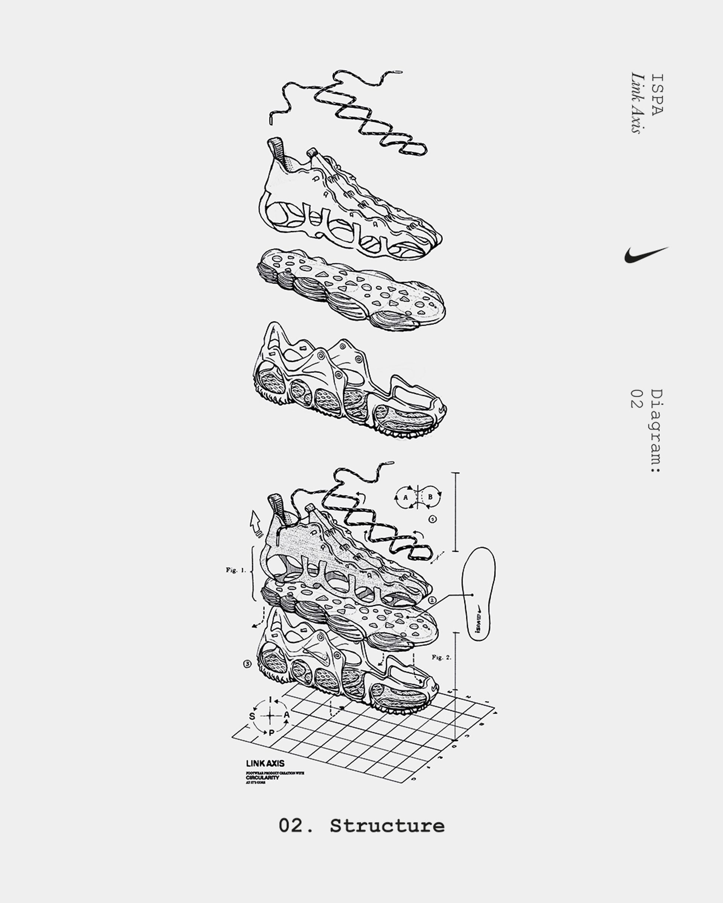

B Capture intervention

Brand take-back pathway
adidas Made To Be Remade
- Consumer return pathway
- QR-supported take-back
- Mono-material approach [3][7]
StrengthImproves product capture
DependencyReturn ≠ usable recovery
Critical case study / Circular footwear
Comparing Nike ISPA Link Axis and adidas Made To Be Remade
Can this material return?
How effectively does a design decision help footwear materials return to productive use? [4]

Brand take-back pathway
StrengthImproves product capture
DependencyReturn ≠ usable recovery

Design for disassembly
StrengthImproves technical separation
DependencyUseful only if captured
A shared system connects capture, separation and downstream recovery across brands.
Connect retailers with product stewardship. [6]
Shared identifiers improve interoperability.